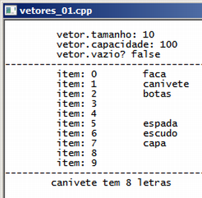

Curso completo de linguagem C++
Gameprog - Escola de programação de jogos digitais
Contato: gameprog.br@gmail.com
track18.html
18. STL 1/5 <vector>
18.1 Visão geral
A linguagem c++ possui uma biblioteca padrão de classes que implementa diversas
estruturas de dados bastante utilizadas em programação como arrays dinâmicas,
filas, pilhas, mapas e algoritmos muito utilizados como organização e pesquisa
de dados.
Estas classes são implementadas utilizando a sintaxe genérica de programação
desta forma garantindo que estas estruturas sejam utilizadas com qualquer
tipo de dado. Esse conjunto de bibliotecas da linguagem c++ é conhecido como
STL - Standard Template Library que pode ser traduzido como Biblioteca de
modelos padrões.
Em STL é comum pensar das estruturas de dados como se fossem containers ou
recipientes para qualquer outro tipo de dado. Na manipulação dos recipientes
aparece a figura do iterator que é um objeto que funciona semelhante a um
ponteiro pelo qual você acessa e transita pelos dados armazenados.
18.1.1 #include <vector> // arrays dinâmicas
Nossa primeira abordagem é a biblioteca <vector> que implementa vector que
consiste em uma array dinâmica. O vetor permite o crescimento dinâmico da
array, permite a inserção e a deleção de itens e todo o processo de alocação
e liberação da memória é feito de maneira automática por essa estrutura.
Nosso programa abaixo 'imagina' um inventário de itens muito típico de muitos
jogos de videogame. É comum do personagem caminhar pelo cenário, localizar
itens, pegar, gastar itens, trocar itens. Os vetores se prestam muito bem a
essas necessidades.

// vetores_01.cpp
// Ilustra o uso de vetores
#include <iostream>
#include <string>
#include <vector>
using namespace std;
void inicio();
void fim();
// -------------------- início da função principal ---------------------------
int main() {
inicio();
vector<string> inventario(5);
vector<string>::iterator ncx_iter;
int ntam;
int nitem = 0;
int ncapacidade = 0;
bool lvazio;
// Assinalando os itens nas posições reservadas
inventario[0] = "faca";
inventario[1] = "canivete";
inventario[2] = "botas";
// Anexando dados no final do vetor
inventario.push_back("espada");
inventario.push_back("escudo");
inventario.push_back("capa");
inventario.resize(10);
ntam = inventario.size();
inventario.reserve(100);
ncapacidade = inventario.capacity();
lvazio = inventario.empty();
cout << "\t vetor.tamanho: " << ntam << "\n";
cout << "\t vetor.capacidade: " << ncapacidade << "\n";
cout << "\t vetor.vazio? " << boolalpha << lvazio << "\n";
cout << "------------------------------------------ \n";
// Acessando os itens via iterator
for (ncx_iter = inventario.begin(); ncx_iter != inventario.end(); ncx_iter++)
{
cout << "\t item: " << nitem << "\t";
cout << *ncx_iter << "\n";
nitem++;
}
// Acessando os itens via indice
cout << "------------------------------------------ \n \t";
cout << inventario[1].c_str() << " tem " ;
cout << inventario[1].size() << " letras \n\n";
fim();
} // endmain
// ------------------ funções básicas ----------------------------------------
void inicio() {
system("color f0"); system ("title vetores_01.cpp");
cout << "\n";
} // endfunction: inicio()
void fim() {
cout << endl;
system("pause");
} // endfunction: inicio()
#include <vector>
Inclua a linha acima para utilizar arrays dinâmicas.
vector<string> inventario(5);
Na declaração acima foi criado um vetor para armazenar 5 strings.
Então para criar um vetor pode ser utilizado esta sintaxe:
vector<tipo_de_dado> nome_do_vetor (nTamanho do vetor);
vector<string>::iterator ncx_iter;
Na maioria dos programas exemplos do nosso curso nós utilizamos em uma
estrutura for(;;) uma variável inteira nomeada ncx para acessar e
transitar pelos elementos de uma array ou para repetir um bloco de código
um certo número de vezes. Cada ciclo de repetição do código é chamado de
iteração e dizemos que nossa variável ncx é um iterador (iterator em inglês).
De maneira semelhante precisamos definir um iterador para acessar os elementos
dos vetores e para transitar por estes elementos. Na linha acima declaramos
que ncx_iter é um iterador de um vetor de strings.
int ntam;
int ncapacidade = 0;
bool lvazio;
Declaramos estas variáveis para guardar os valores das propriedades retornados
por alguns métodos como tamanho do vetor, capacidade e um valor lógico para
guardar se o vetor estiver vazio.
// Assinalando os itens nas posições reservadas
inventario[0] = "faca";
inventario[1] = "canivete";
inventario[2] = "botas";
Nos vetores você pode assinalar conteúdo às posições utilizando a sintaxe
normal de arrays, isto é possível desta forma porque esta classe implementa
o método operator[]().
// Anexando dados no final do vetor
inventario.push_back("espada");
inventario.push_back("escudo");
inventario.push_back("capa");
O método .push_back() expande o tamanho do vetor e anexa o conteúdo em seu final.
inventario.resize(10);
ntam = inventario.size();
inventario.reserve(100);
ncapacidade = inventario.capacity();
lvazio = inventario.empty();
O método .resize() redimensiona o tamanho do vetor. O método .reserve() aloca
antecipadamente memória para o vetor.
O método .capacity() retorna a capacidade de memória para itens do vetor.
O método .empty() verifica se o vetor está vazio.
A questão do redimensionamento de arrays trazida pelo método .resize() é um
processo complexo e que toma certo tempo de processamento porque o algoritmo
de aumento do tamanho da array implica na alocação de um espaço maior e
depois cópia dos elementos originais para o espaço recém-alocado. Devido
a isso é importante utilizar .reserve() para deixar pré-reservado o
espaço que você acredita que tua array pode alcançar para assim evitar
dispêndio de tempo em repetições de redimensionamento da array.
for (ncx_iter = inventario.begin(); ncx_iter != inventario.end(); ncx_iter++)
{
cout << "\t item: " << nitem << "\t";
cout << *ncx_iter << "\n";
nitem++;
}
Este bloco permite o acesso e a iteração pelos elementos do vetor de strings.
O método .begin() retorna um iterator que aponta para o começo do vetor, e
o método .end() retorna um iterator apontando para o final do vetor. Veja
que é utilizado sintaxe de ponteiros para adiantar (ncx_iter++) e acessar
os elementos apontados (*ncx_iter). Essa forma somente é possível porque esta
classe implementa o operator*().
// Acessando os itens via indice:
cout << "------------------------------------------ \n \t";
cout << inventario[1].c_str() << " tem " ;
cout << inventario[1].size() << " letras \n\n";
Este bloco produz este resultado: canivete tem 8 letras.
O operator[]() retorna uma referência ao objeto armazenado no vetor. Como
este objeto é da classe string nós utilizamos os métodos dessa classe
para obter a string propriamente dita através de .c_str() e acessamos
o tamanho dela pelo método .size().